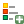

The Legend Item
To add a map legend, click the  Add new legend icon,
place the element with the left mouse button on the Print Composer canvas and
position and customize the appearance in the legend Item Properties
tab.
The Item properties of a legend item tab provides the following
functionalities (see figure_composer_legend_1):
Figure Composer Legend 1:
The Main properties dialog of the legend Item Properties tab
provides the following functionalities (see figure_composer_legend_2):
Figure Composer Legend 2:
In Main properties you can:
- Change the title of the legend.
- Set the title alignment to Left, Center or Right.
- You can choose which Map item the current legend will refer to
in the select list.
- You can wrap the text of the legend title on a given character.
The Legend items dialog of the legend Item Properties tab
provides the following functionalities (see figure_composer_legend_3):
Figure Composer Legend 3:
The legend will be updated automatically if  Auto-update is checked.
When Auto-update is unchecked this will give you more control over the legend items.
The icons below the legend items list will be activated.
Auto-update is checked.
When Auto-update is unchecked this will give you more control over the legend items.
The icons below the legend items list will be activated.
The legend items window lists all legend items and allows you to change item order,
group layers, remove and restore items in the list, edit layer names and add a filter.
- The item order can be changed using the [Up] and [Down] buttons or with ‘drag-and-drop’
functionality. The order can not be changed for WMS legend graphics.
- Use the [Add group] button to add a legend group.
- Use the [plus] and [minus] button to add or remove layers.
- The [Edit] button is used to edit the layer, groupname or title.
First you need to select the legend item.
- The [Sigma] button adds a feature count for each vector layer.
- Use the [filter] button to filter the legend by map content, only the
legend items visible in the map will be listed in the legend.
After changing the symbology in the QGIS main window, you can click on [Update All] to
adapt the changes in the legend element of the Print Composer.
The Fonts, Columns and Symbol dialogs of the legend
Item Properties tab provide the following functionalities
(see figure_composer_legend_4):
Figure Composer Legend 4:
- You can change the font of the legend title, group, subgroup and item (layer) in the legend item.
Click on a category button to open a Select font dialog.
- You provide the labels with a Color using the advanced color picker, however the selected
color will be given to all font items in the legend..
- Legend items can be arranged over several columns. Set the number of columns in
the Count
 field.
field.
- Equal column widths sets how legend columns should be adjusted.
- The Split layers option allows a categorized or a graduated layer
legend to be divided between columns.
- You can also change the width and height of the legend symbol,set a color and
a thickness in case of raster layer symbol.
The WMS LegendGraphic and Spacing dialogs of the legend
Item Properties tab provide the following functionalities (see
figure_composer_legend_5):
Figure Composer Legend 5:
When you have added a WMS layer and you insert a legend composer item, a request
will be sent to the WMS server to provide a WMS legend. This Legend will only be
shown if the WMS server provides the GetLegendGraphic capability.
The WMS legend content will be provided as a raster image.
WMS LegendGraphic is used to be able to adjust the Legend width
and the Legend height of the WMS legend raster image.
Spacing around title, group, subgroup, symbol, icon label, box space
or column space can be customized through this dialog.


{kind=link}